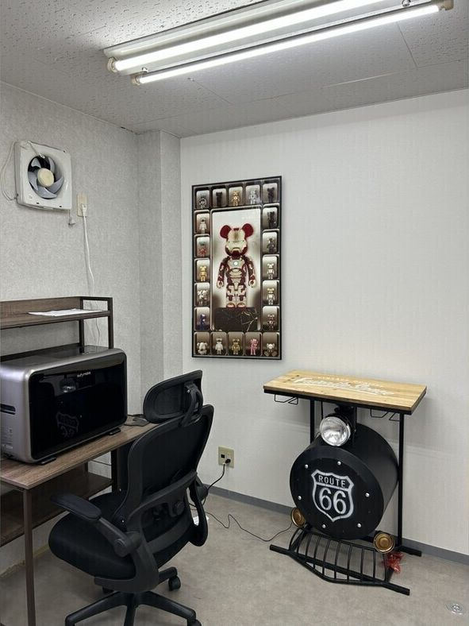

3Dプリンターで何を作るの？
LICOでは、3Dプリンターを使って、スマホケースや名刺入れなどのオリジナルグッズを作っています。お客様から届いた写真やデザインを、世界にひとつだけのグッズに仕上げていきます。ペットの写真や家族の写真など、思い出のつまった注文だからこそ、完成したときの「できた！」は格別です。
いろいろな作業があるから、自分に合う仕事が見つかる
- パソコンでデザインのデータを整える
- 3Dプリンターで印刷する
- 仕上がりをチェックする
- 梱包・発送の準備をする
パソコンが得意な方も、手を動かすのが得意な方も活躍できます。その日の体調に合わせて、無理のない作業を選べます。

「誰かの役に立っている」を実感できる
作ったグッズは、商品としてお客様のもとへ届きます。自分の仕事が誰かの喜びにつながる。それが、この作業のいちばんの魅力です。
こんな方にぴったりです
- ものづくりや、手先を使う作業が好き
- きれいに仕上げることにこだわりたい
- 機械を使う作業に興味がある
動画編集との組み合わせも相談できます。動画編集の記事もあわせてご覧ください。福岡市西区・今宿でものづくりができるB型事業所をお探しの方は、まず見学にいらしてください。
作業の内容や時間など、状況によって変わります。くわしくは見学のときにご説明します。
よくある質問
- 3Dプリンターを使ったことがなくてもできますか？
- 未経験の方も大歓迎です。「やってみたい」という気持ちを大切に、基本操作から少しずつ一緒に進めます。
- 見学のときに実際の機械を見られますか？
- はい。見学のときに、実際の機械や作品を見ていただけます。